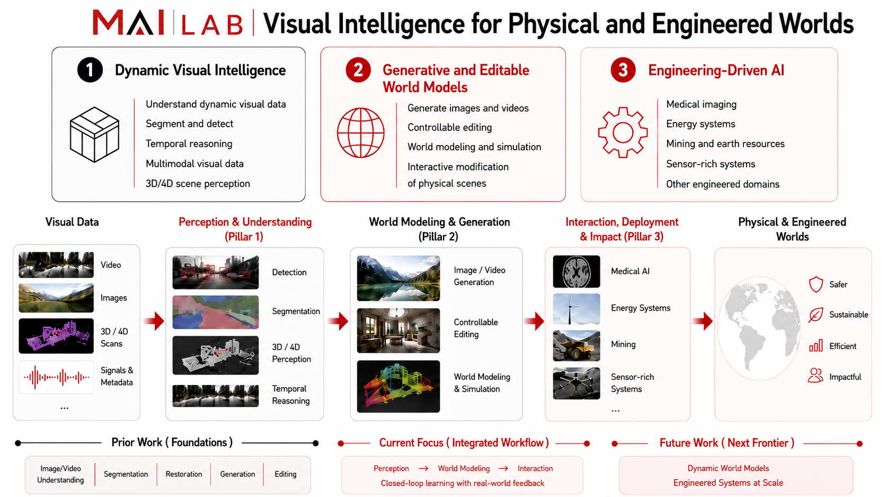

Visual Intelligence
Image and video understanding, generation, editing, grounding, detection, segmentation, and robustness under challenging conditions such as low light, rain, and snow.
Overview Figure

Research
Image and video understanding, generation, editing, grounding, detection, segmentation, and robustness under challenging conditions such as low light, rain, and snow.
Perception and understanding that scale into 3D and 4D reconstruction, scene interaction, and embodied reasoning in dynamic physical environments.
AI systems for medical imaging, energy systems, mining, and other engineered domains, with an emphasis on robust learning from complex multimodal and sensor-rich data.
Selected Papers